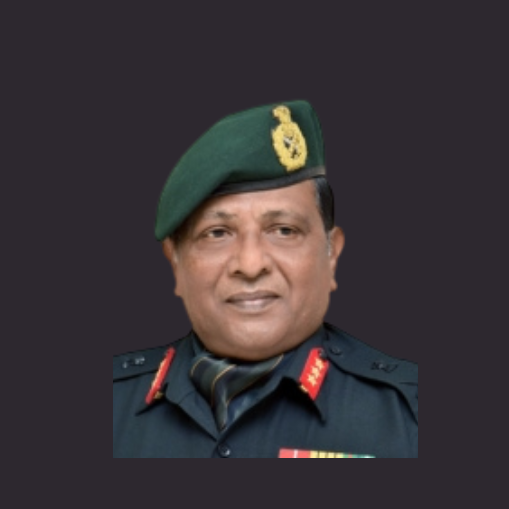

Principal Advisor – Defence Strategy & Capability Development

The NeuroPi Industrial Intelligence Platform benefits from the strategic guidance of distinguished senior defence leadership, including Lieutenant General Cherish Mathson, PVSM, SM, VSM, former General Officer Commanding-in-Chief (GOC-in-C), South Western Command, Indian Army. His extensive experience in military operations, strategic planning, defence capability development, organizational leadership, and national security provides valuable guidance in aligning the AI-Powered Digital Twin Sync System with the operational, governance, and security expectations of India's defence establishment.
Commissioned into the Garhwal Rifles in 1980, Lieutenant General Cherish Mathson completed nearly four decades of distinguished military service across strategic, operational, and national-level leadership appointments. Throughout his career, he commanded formations and organizations operating in some of India's most demanding defence environments while contributing to capability development, operational planning, organizational transformation, and defence modernization.
His leadership experience includes:
His extensive understanding of defence operations, engineering programme governance, mission-critical decision-making, and organizational leadership provides valuable strategic oversight for the NeuroPi Industrial Intelligence Platform.
Lieutenant General Mathson provides strategic guidance in ensuring that the proposed AI-Powered Digital Twin Sync System aligns with defence-grade operational expectations and enterprise governance. His advisory role strengthens the programme through guidance on:
The implementation of an AI-Powered Digital Twin Sync System extends beyond software deployment; it represents a strategic step towards the digital transformation of India's defence shipbuilding ecosystem. Lieutenant General Mathson's experience in defence leadership, national security, organizational transformation, and strategic programme management helps ensure that the proposed solution is developed with a clear understanding of defence operational environments, governance requirements, security expectations, and long-term capability development objectives.
His guidance strengthens the alignment of the NeuroPi Industrial Intelligence Platform with the broader vision of Atmanirbhar Bharat, indigenous defence capability development, and the modernization of India's naval engineering and shipbuilding infrastructure.